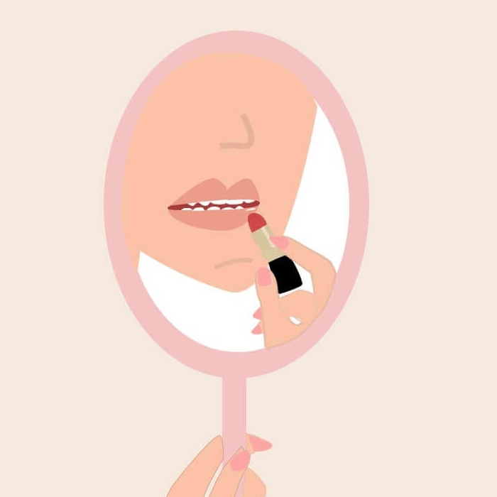
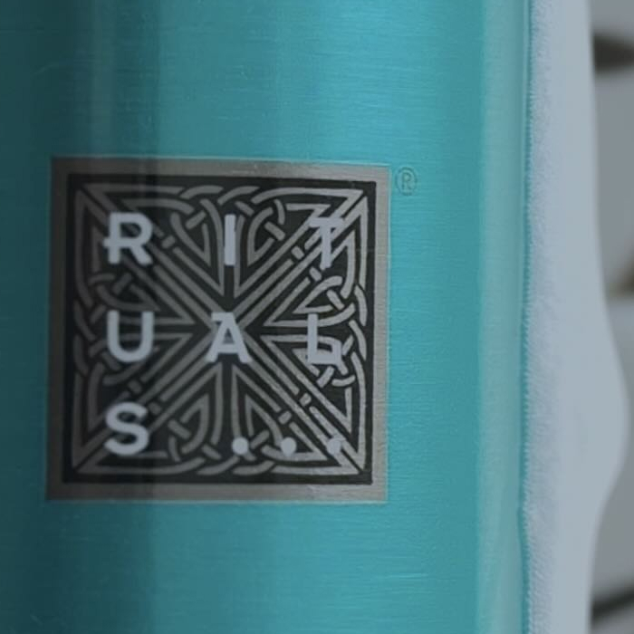
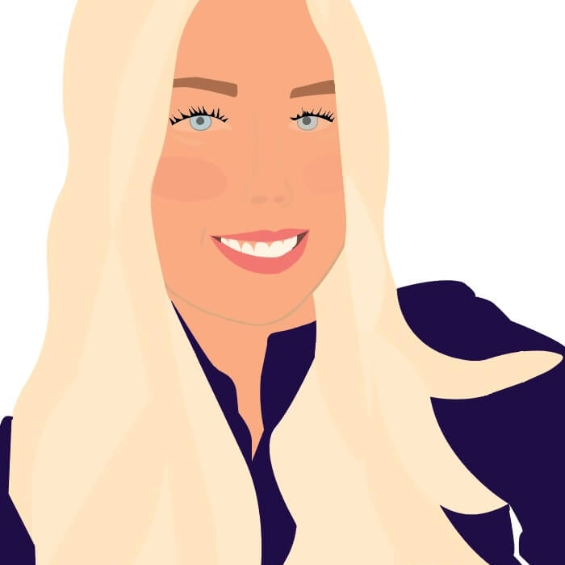
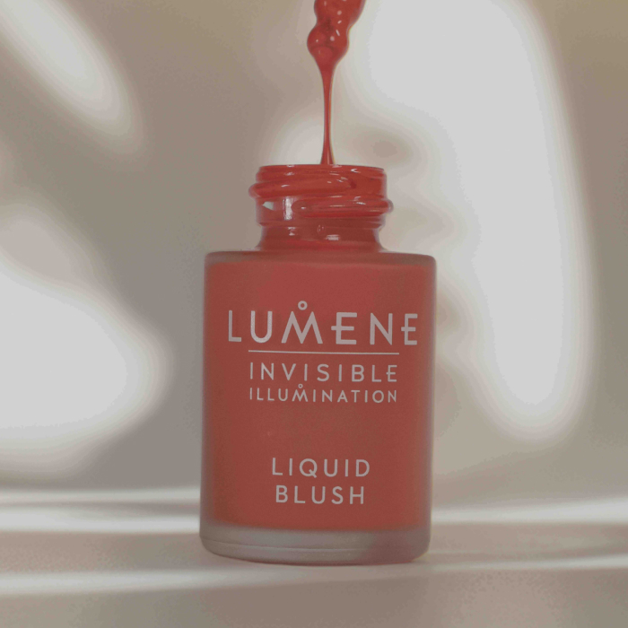
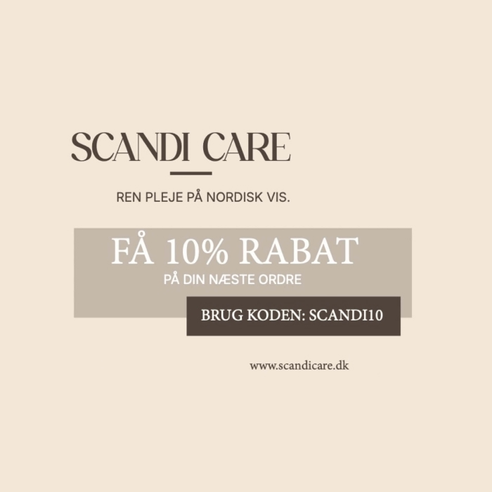
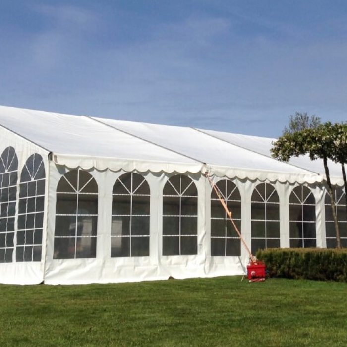

Motion Graphic
Motion Graphic-projekt med fokus på bevægelse og visuelt udtryk inspireret af beauty-universet.
Se projekt →Portfolio
Et udvalg af projekter udviklet gennem 1. semester med fokus på branding, visuel kommunikation, UX/UI, content creation og digitale designløsninger.

Motion Graphic-projekt med fokus på bevægelse og visuelt udtryk inspireret af beauty-universet.
Se projekt →
Videoprojekt med fokus på storytelling, stemning, lyd og visuel identitet udviklet som en moderne reklamefilm.
Se projekt →
Illustrator-opgave med fokus på digital illustration, detaljer og præcision i Adobe Illustrator.
Se projekt →
Produktfotografi med fokus på styling, lys, æstetik og branding inspireret af moderne beauty-universer.
Se projekt →
Brandingprojekt med fokus på typografi, layout og visuel identitet udviklet i Adobe InDesign.
Se projekt →
Redesignprojekt med fokus på brugeroplevelse, navigation og moderne UX/UI-design udviklet i Figma.
Se projekt →